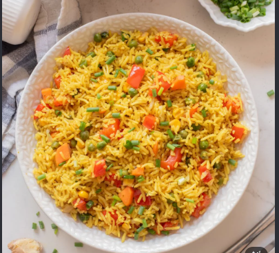

Fried rice is a popular dish made from cooked rice that is stir-fried in a wok or a frying pan and is usually mixed with other ingredients such as eggs, vegetables, seafood, or meat. It is often flavored with soy sauce, garlic, and other seasonings.